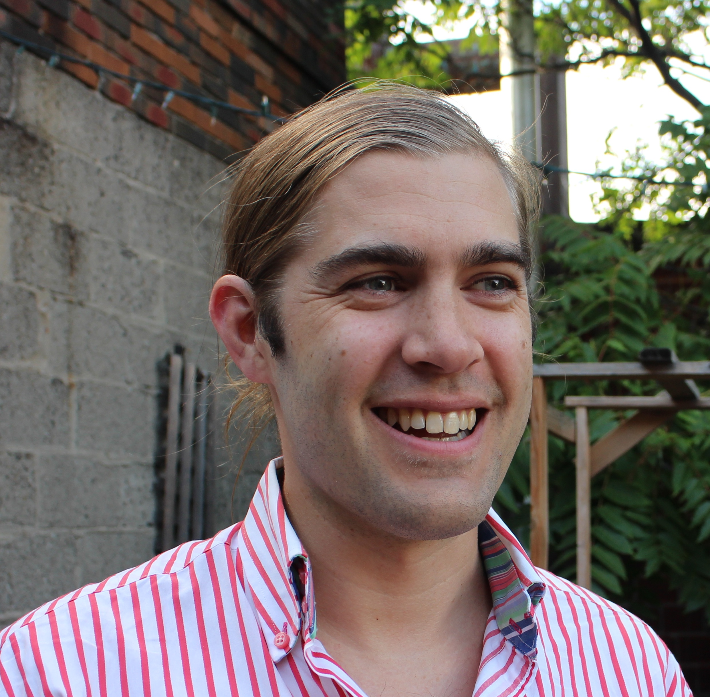

Barend Beekhuizen

Assistant Professor
Department of Language Studies
University of Toronto Mississauga (undergraduate appointment)
Department of Linguistics
University of Toronto (graduate appointment)
Department of Computer Science
University of Toronto (cross-appointment, status only)
☏ (647) 580-5514
✉ barend.beekhuizen@utoronto.ca
✉ barendbeekhuizen@gmail.com
homepage
github
google scholar
office 1: Maanjiwe Nendamowinan 4138 (Language Studies; UTM)
office 2: Sidney Smith Hall 4056 (Linguistics; St. George)
office 3: D.L. Pratt Building 283e (Computer Science; St. George)
CV
Education
Ph.D. 2015 Leiden University Linguistics (cum laude)
(assoc. w/) University of Amsterdam Institute for Logic, Language, and Computation
M.Phil 2010 Leiden University Linguistics (cum laude)
B.A. 2007 Leiden University Dutch Language and Culture
Research Interests
My main interest is the development of computational models that shed light on word meaning. My primary focus is on the ways in which languages vary in the way they categorize the world with their words, how this variation can inform us about the mental representation of categories, and how such categories are used in discourse. In my research, I use translated and non-translated cross-linguistic corpus data, as well spontaneously produced data, such as conversational spoken language and social media corpora.
Notes for Prospective Graduate Students, Postdocs, and Visiting Scholars
If you are a prospective graduate student, please read this note
If you are a prospective postdoc or visiting scholar, please read this note
Publications
in progress
- Watson, Jules, Xi Wang, Raymond Liu, Suzanne Stevenson and Barend Beekhuizen (2025). Analyzing values about gendered language reform in LLMs' revisions. arXiv preprint [link]
2025
- Barend Beekhuizen (2025). Spatial relation marking across languages: extraction, evaluation, analysis. In: 29th Conference on Computational Natural Language Learning (CoNLL 2025).
- Barend Beekhuizen (2025). VORM: Translations and a constrained hypothesis space support unsupervised morphological segmentation across languages. In 29th Conference on Computational Natural Language Learning (CoNLL 2025).
- Barend Beekhuizen (2025). Token-level semantic typology without a massively parallel corpus. In The 7th Workshop on Research in Computational Linguistic Typology and Multilingual NLP.
- Hannah S. Rognan and Barend Beekhuizen (2025). A discovery procedure for synlexification patterns in the world's languages. In The 7th Workshop on Research in Computational Linguistic Typology and Multilingual NLP.
- Jules Watson, Sophia Lee, Beekhuizen, B., & Stevenson, S. (2025, January). Do language models practice what they preach? examining language ideologies about gendered language reform encoded in LLMs. In O. Rambow, L. Wanner, M. Apidianaki, H. Al-Khalifa, B. D. Eugenio, & S. Schockaert (Eds.), Proceedings of the 31st international conference on computational linguistics (pp. 1201–1223). Abu Dhabi, UAE: Association for Computational Linguistics. [link]
2024
- Samantha Jackson, Barend Beekhuizen, Zhao Zhao and Rhonda McEwen (2024). GPT-4-trinis: assessing GPT-4‘s
communicative competence in the English-speaking majority world. AI and Society, 40, 1785–1801.
- Samantha Jackson, Barend Beekhuizen, Zhao Zhao, Y.C. Zhao and Rhonda McEwen (2024). LLMs and Linguistic Competency: An
Exploration of GPT-4 and a Non-Hegemonic English Variety. Newhouse Impact Journal 1, 8–9.
- Bram van Dijk, Max van Duijn, Li Kloostra, Marco Spruit and Barend Beekhuizen (2024). Using a language model to unravel semantic development in children’s use of a Dutch perception verb. In M. Zock, E. Chersoni, Y.-Y. Hsu, & S. de Deyne (Eds.), Proceedings of the Workshop on Cognitive Aspects of the Lexicon (CogALex) (pp. 98–106). Torino, Italia: ELRA and ICCL. [link]
- Barend Beekhuizen (2024). Discursive distinctiveness explains lexical differences between languages. In
J. Nolle et al. (Eds.), The Evolution of Language: Proceedings of the 15th International Conference (Evolang XV). [link]
2023
- Barend Beekhuizen, Maya Blumenthal, Lee Jiang, Anna Pyrtchenkov and Jana Savevska (2023). Truth be told. a
corpus-based study of adjectives of truth and reality across languages. Corpus Linguistics and Linguistic
Theory.
- Julia Watson, Barend Beekhuizen, Suzanne Stevenson (2023). What social attitudes about gender does BERT encode?
Leveraging insights from psycholinguistics. In Proceedings of the 61st Annual Meeting of the Association for
Computational Linguistics (volume 1: Long papers) (pp. 6790–6809).
- Julia Watson, S. Walker, Suzanne Stevenson & Barend Beekhuizen, B. (2023). Communicative need shapes choices to use
gendered vs. gender-neutral kinship terms across online communities. In Proceedings of the 45th annual
conference of the Cognitive Science Society.
- Myrto Grigoroglou, Barbara Landau, Anna Papafragou, Ercenur Ünal, Kevser Kırbasoglu, Dilay Karadoller, Beyza Sumer, Asli Ozyurek, Barend Beekhuizen, Kenny R Coventry, Piotr J. Barc, Lucy-Amber Roberts, and Harmen Gudde (2023). Space in context: Communicative factors shape spatial language. In Proceedings of the Annual Meeting of the Cognitive Science Society . [link]
2022
- Barend Beekhuizen and Sandra A. Thompson (2022). 'Something that's very American': The Interactional Role of Light-Head Relative Clauses. Discourse Studies 24(2). [self-archived version]
2021
- Frederick Gietz & Barend Beekhuizen (2021). 'Lexical pragmatics in the Wild: The Case of Complement Coercion'. In: Proceedings of the Meaning in Context workshop at NeurIPS.. [link]
- Frederick Gietz & Barend Beekhuizen (2021). 'Remodelling complement coercion interpretation'. In: Proceedings of the Society for Computation in Linguistics: pp. 158-170. [link]
- Beekhuizen, B. (2021). Not your dad, maar wel je vader. In N. van der Sijs, L. Fonteyn, & M. van der Meulen (Eds.), Wat gebeurt er in het Nederlands? (pp. 285-289). Utrecht: Sterck & De Vreese.
- Barend Beekhuizen, Blair C. Armstrong and Suzanne Stevenson (2021). Probing Lexical Ambiguity: Word Vectors Encode Number and Relatedness of Senses. Cognitive Science 45 (5), e12943 [self-archived version] [publisher link]
- Farhan Samir, Barend Beekhuizen and Suzanne Stevenson (2021). A Formidable Ability: Detecting Adjectival Extremeness with DSMs. Findings of the Association for Computational Linguistics, p. 112-4125. [paper]
- Julia Watson, Anna Kapron-King, Jai Aggarwal, Barend Beekhuizen, Daphna Heller and Suzanne Stevenson (2021). Come Together: Integrating Perspective Taking and Perspectival Expressions. In: Proceedings of the 43rd Annual Meeting of the Cognitive Science Society: p. 910-916. [paper]
- Julia Watson, Farhan Samir, Suzanne Stevenson, Barend Beekhuizen (2021). Coin it up: Generalization of creative constructions in the wild. In: Proceedings of the 43rd Annual Meeting of the Cognitive Science Society: p. 770-776. [paper]
2020
- Julia Watson, Barend Beekhuizen and Suzanne Stevenson (2020). Coloring Outside the Lines: Error Patterns in Children's Acquisition of Color Terms. In: Proceedings of the 42nd Annual Meeting of the Cognitive Science Society: p. 2231-2237. [paper]
- Farhan Samir, Suzanne Stevenson and Barend Beekhuizen (2020). Untangling Semantic Similarity: Modeling Lexical Processing Experiments with Distributional Semantic Models. In: Proceedings of the 42nd Annual Meeting of the Cognitive Science Society: p. 1562-1568. [paper]
- Barend Beekhuizen (2020). A dataset and metric to evaluate lexical extraction from parallel corpora’. Proceedings of the Association for Computational Linguistics Special Interest Group on Typology, extended abstract [link]
2019
- Ella Rabinovich, Julia Watson, Barend Beekhuizen & Suzanne Stevenson (2019). Say Anything: Automatic Semantic Infelicity Detection in L2 English Indefinite Pronouns. Proceedings CoNLL. [paper] (winner of the CoNLL Best Paper Award for Research Inspired by Human Language Learning and Processing)
- Beekhuizen, Barend, Chen Xuan Cui & Suzanne Stevenson (2019). Representing lexical ambiguity in prototype models of lexical semantics. Proceedings of the 41th Annual Conference of the Cognitive Science Society, pp. 1376-1382. [paper] [data]
- Julia Watson, Barend Beekhuizen & Suzanne Stevenson (2019). Identifying the Evolutionary Progression of Color from Crosslinguistic Data. Proceedings of the 41th Annual Conference of the Cognitive Science Society, pp. 3071-3077. [paper]
2018
- Beekhuizen, Barend & Suzanne Stevenson (2018). More than the eye can see: A computational model of color term acquisition and color discrimination. Cognitive Science 42(8): 2699-2734 [publisher link] [self-archived version]
- Rice, Caitlin, Barend Beekhuizen, Suzanne Stevenson & Blair Armstrong (2018). Meaning dominance norms for homonyms from free associations and subtitles. Behavior Research Methods.
- Beekhuizen, Barend, Sasa Milic, Blair Armstrong & Suzanne Stevenson (2018). What Company Do Semantically Ambiguous Words Keep? Insights from Distributional Word Vectors. Proceedings of the 40th Annual Conference of the Cognitive Science Society
[paper]
- Matusevych, Yevgen, Barend Beekhuizen & Suzanne Stevenson (2018). Crosslinguistic transfer as category adjustment:
Modeling conceptual color shift in bilingualism. Proceedings of the 40th Annual Conference of the Cognitive Science Society
[paper]
2017
- Beekhuizen, Barend, Julia Watson & Suzanne Stevenson (2017). Semantic Typology and Parallel Corpora: Something about Indefinite Pronouns. Proceedings of the 39th Annual Conference of the Cognitive Science Society
[paper]
[slides]
[data and code]
- Nematzadeh, Aida, Barend Beekhuizen, Shanshan Huang & Suzanne Stevenson (2017). Calculating Probabilities Simplifies Word Learning. Proceedings of the 39th Annual Conference of the Cognitive Science Society
[paper]
- Beekhuizen, Barend, Rens Bod & Arie Verhagen (2017). Acquiring relational meaning from the situational context. What linguists can learn from analyzing videotaped interaction. In: Jacqueline Evers-Vermeul and Elena Tribushinina (eds.), Usage-Based Approaches to Language Acquisition and Language Learning. Studies on Language Acquisition [SOLA]. Berlin/Boston: De Gruyter/Mouton, 73-96.
[publisher's link]
[manuscript]
2016
- Beekhuizen, Barend & Suzanne Stevenson (2016). Modeling developmental and linguistic relativity effects in color term acquisition. In Proceedings of the 38th International Conference of the Cognitive Science Society
[link]
- Beekhuizen, Barend (2016). De zijnsstatus van de afhankelijke V1-constructie in het Nederlands. `The ontological status of the dependent verb-first construction in Dutch'. Nederlandse Taalkunde 21(1): 33-59.
[journal page]
[manuscript]
- Beekhuizen, Barend (2016). De taalgebruiker, de betekenis en de afhankelijke V1-constructie. `The language user, the meaning, and the dependent verb-first construction'. Nederlandse Taalkunde 21(1): 81-91.
[journal page]
[manuscript]
2015
- Beekhuizen, Barend & Suzanne Stevenson (2015). Perceptual, Conceptual, and Frequency Effects on Error Patterns in English Color Term Acquisition. In The Sixth Workshop on Cognitive Aspects of Computational Language Learning
[paper]
[slides]
- Beekhuizen, Barend & Suzanne Stevenson (2015). Crowdsourcing Elicitation Data for Semantic Typologies. In Proceedings of the 37th Annual Meeting of the Cognitive Science Society.
[paper]
[poster]
2014
- Beekhuizen, Barend & Rens Bod (2014). Automating Construction Work Data-Oriented Parsing and Constructivist Accounts of Language Acquisition. In: Ronny Boogaart, Timothy Colleman & Gijsbert Rutten (eds.), Extending the scope of construction grammar. The Hague: Mouton.
[publisher link]
[manuscript]
- Beekhuizen, Barend, Rens Bod & Arie Verhagen (2014). The linking problem is a special case of a general problem none of us has solved. Language (Perspectives) 90(3), e91-e96.
[journal link]
[manuscript]
- Beekhuizen, Barend, Afsaneh Fazly & Suzanne Stevenson (2014). Learning Meaning without Primitives. Typology Predicts Developmental Patterns. In Proceedings of the 36th Annual Meeting of the Cognitive Science Society
[paper]
[slides]
- Beekhuizen, Barend, Rens Bod, Afsaneh Fazly, Suzanne Stevenson, and Arie Verhagen (2014). A Usage-Based Model of Early Grammatical Development. In Proceedings of the workshop on Cognitive Modeling and Computational Linguistics (CMCL)
[paper]
[slides]
2013
- Beekhuizen, Barend, Willem Zuidema & Rens Bod (2013). Three design principles of language. The search for parsimony in redundancy. Language and Speech 56 (3).
[journal link]
- Beekhuizen, Barend, Afsaneh Fazly, Aida Nematzadeh & Suzanne Stevenson (2013). Word Learning in the Wild. What Natural Data Can Tell Us. Proceedings of the 35th Annual Meeting of the Cognitive Science Society.
[paper]
[poster]
Dissertation
Beekhuizen, Barend (2015). Constructions Emerging: A Usage-Based Model of the Acquisition of Grammar. Utrecht, LOT.
[publisher's link (free pdf download)]
[pre-defense slides]
[winner of the annual Dutch Linguistics Society dissertation award; slides]
Talks
- 25 April 2025. Barend Beekhuizen. Unsupervised morphological segmentation with domain-informed heuristics. Invited talk for the University of Toronto Mississauga Computer Science Faculty-Grad Student Seminar.
- 18 June 2024. Nadia Takhtaganova and Barend Beekhuizen. Variation in the Morphosemantics of Postnominal Prepositions: The Case of Romance. Oral presentation given at the Canadian Linguistics Association.
- 27 June 2024. Claudia Raihert and Barend Beekhuizen. Studying metaphor-in-context computationally: From ad hoc to systematic variation across genres. Oral presentation given at the Cognitive Linguistics Association of North America.
- 29 July 2024. Guillaume Thomas and Barend Beekhuizen. Cross-linguistic variation in the expression of incrementation
and related functions. European Summer School for Language, Logic, and Information, workshop on incrementation.
- 26 August 2024. Barend Beekhuizen. Lexicons encode differently what people do differently. Computational studies of
the pragmatic motivations of lexical typology. Poster presented as the Annual Meeting of the Cognitive Science Society.
- February 8, 2024. Lexicons encode differently what people do differently. Computational studies of the pragmatic
motivations of lexical typology. Invited colloquium talk at the The University at Buffalo, Linguistics
department
- 14 October 2023. Barend Beekhuizen and Kaleigh Woolford: Community-specific Context Typicality as a determinant of lexical variation. Oral presentation at the New Ways of Analyzing Variation conference.
- 30 August 2023. Barend Beekhuizen: Discursive variation explains colexification. A lexicon-wide case study on the DoReCo corpus. Oral presentation at the Societas Linguisticae Europaea.
- 11 August 2023. Claudia Raihert and Barend Beekhuizen: Speaking figuratively across genres: discourse, metaphor, and variation. Oral presentation at the International Cognitive Linguistics Conference.
- 11 August 2023. Ana Tona and Barend Beekhuizen: Speech framing verbs in spoken language complicate crosslinguistic findings. Oral Presentation at the International Cognitive Linguistics Conference.
- 10 August 2023. Barend Beekhuizen: Discursive variation explains colexification. A lexicon-wide case study on the DoReCo corpus. Oral presentation at the International Cognitive Linguistics Conference.
- 27 July 2023. Barend Beekhuizen. The typology of topological spatial language. A parallel corpus study in 1200 languages. Invited oral presentation as part of the symposium 'Space in Context: Communicative factors shape spatial language’ at the Annual Meeting of the Cognitive Science Society.
- 29 June 2023. Kaleigh Woolford and Barend Beekhuizen. Community-specific Context Typicality as a determinant of
lexical variation. Oral presentation at the Quantitative Linguistics Conference 2023.
- 10 March 2023. Frederick Gietz and Barend Beekhuizen. Rethinking the complement coercion interpretation: evidence from
probe recognition. Poster presented at Human Sentence Processing.
- 11 March 2023. Tiana Simovic and Barend Beekhuizen. Donkey drivers and animal teachers: how context modulates novel
noun compound interpretation. Poster presented at Human Sentence Processing.
- 12 October 2022. Tiana Simovic and Barend Beekhuizen. Identifying the Role of Context in Novel Noun Compound
Interpretation. Poster presented at the Mental Lexicon conference.
- 1 November 2022. Barend Beekhuizen and Sandra Thompson. Characterizations and their language. Talk presented at the
Digital Meeting for Conversation Analysis.
- 26 August 2022. Types of meaning, types of variation: Expanding the scope of lexical semantic typology’. Talk given at the
Societas Linguistica Europeae conference.
- 30 July 2022. Tiana Simovic & Barend Beekhuizen: ‘Exploring context‘s role in the interpretation of novel noun
compounds’. Poster presented at the 44th Annual Conference of the Cognitive Science Society
- 29 July 2022. Frederick Gietz & Barend Beekhuizen: ‘Two measures for complement coercion interpretation:
Interpretation vs production for complement coercion’. Poster presented at the 44th Annual Conference of the Cognitive Science Society
- 18 July 2022. Tiana Simovic & Barend Beekhuizen: ‘Exploring how context changes the interpretation of novel noun
compounds’. Talk given at Canadian Society for Brain, Behaviour, and Cognitive Science.
- 4 July 2022 Expressive variation: A comparative perspective on lexis and praxis’. Talk given at Language, Culture,
and Mind conference.
- 19 November 2020. ‘A dataset and metric to evaluate lexical extraction from parallel corpora’. Talk given at the Association for
Computational Linguistics Special Interest Group on Typology.
- 22 August 2019. Computational tools for doing semantic typology with parallel text’ Talk given at the Societas Linguistica
Europaea.
- 16 March, 2019. Computational tools for doing semantic typology. Parallel corpora and predictive models. Talk given at
the Toronto-Buffalo Workshop on Language Variation.
- 16 March 2019. Julia Watson, Barend Beekhuizen, Suzanne Stevenson. Identifying the Evolutionary Progression of Color
from Crosslinguistic Data. Talk given at the Toronto-Buffalo Workshop on Language Variation.
- 30 August 2018. Introduction to my research profile. Talk given at the Third University of Toronto Annual Conference of
the Digital Humanities Network.
- 4–7 July 2018. Blair Armstrong, Caitlin Rice, Saša Milic, Barend Beekhuizen & Suzanne Stevenson). ‘How are ambiguous
word meanings learned, represented, and processed? Insights from computational modeling’. Talk given
at the Annual Meeting of the Canadian Society for Brain, Behaviour, and Cognitive Science.
- 26 April 2018. Two advances in semantic maps: text-based typology and directed graphs’ Talk given at the Max Planck
Institute for Psycholinguistics (Nijmegen, the Netherlands) in the Diversity in Language, Culture and
Cognition colloquium series
- 26 April 2018. Dimensions of ambiguity: What’s in the context? Talk given in the Centre for Language Studies
(Radboud Universiteit Nijmegen, the Netherlands) monthly colloquium series.
- 9 November 2017. Caitlin Rice, Vladimir Dubrovsky, Barend Beekhuizen, Suzanne Stevenson & Blair Armstrong. Comparing
meaning frequency estimates: corpus-based modeling vs. human norms. Talk given at the 47th Annual
Meeting of the Society for Computers in Psychology.
- 5 Februari 2017. Exemplar semantics through parallel corpora. Something about indefinite pronouns. Talk given at Leiden University.
[handout]
- 1 November 2016. Parallel corpora and semantic typology. Talk given at the Computational Linguistics Seminar of the Institute for Logic, Language, and Computation of the University of Amsterdam.
[slides]
- 17 August 2016. Carving up the world. Semantic typology and cognition. Talk given at the annual Dog days workshop, Department of Linguistics, University of Toronto.
[slides]
- 10 March 2016. Errors in word meaning acquisition, as explained by semantic typology and computational modeling. Colloquium talk at the Department of Linguistics, University of California, Santa Barbara.
[slides]
- 22 September 2016. Modeling and theory. Insights from the Syntagmatic-Paradigmatic Learner. Pre-defense talk at Leiden University.
[slides]
- 12 December 2014. A usage-based model of early grammatical development. Talk given at the Sixth Biennial Conference of the Belgium Netherlands Cognitive Linguistics Association.
[slides]
- 28 November 2014. V1 bijzinnen. Verbonden in vorm, verdeeld in functie. (Verb-first conditionals. Connected in form, divided in meaning). Invited tlk given at the Dag van de Nederlandse Zinsbouw (Annual day of Dutch Syntax).
[slides]
- 12 March 2014. Learning meaning without primitives. Typology predicts developmental patterns. Talk given in the Computational Linguistics Seminar series at the Institute for Logic, Language, and Computation of the University of Amsterdam.
[slides]
- 13 September 2013. The acquisition of lexical meaning. A plea for naturalism. Invited talk on the Lorentz Institute workshop Modelling Meets Infant Studies in Language Acquisition: A Dialogue on Current Challenges and Future Directions.
[slides]
- 27 June 2013. Packaged and ready to go. Linguistic tools for communication and mental processing. Talk given at the International Cognitive Linguistics Conference.
[slides]
- 25 June 2013. Learning relational meanings from situated caregiver-child interaction. A computational approach. Talk given at the International Cognitive Linguistics Conference.
[slides]
- 11 March 2013. What can we learn from bound learners? Talk given at the workshop Learnability and Computational Models of Language Acquisition held at the University of Amsterdam.
[slides]
- 9 February 2013. Referentiele onzekerheid, computermodellen, en semantische kindertaalcorpora. (Referential uncertainty, computer models, and semantic child language corpora.) Talk given at the Taalkunde in Nederland conference (the annual meeting of the Dutch Linguistics Society).
[slides]
- 18 January 2013. Modelling the acquisition of lexical meaning from caregiver-child interaction. Getting the semantics straight. Talk given at the annual Computational Linguistics in the Netherlands conference.
[slides]
- 15 December 2012. Hoe leer je een grammatica uit voorbeelden? Een computationele benadering (How to learn a grammar from examples. A computational approach). Talk given at the Fifth Biennial Conference of the Belgium Netherlands Cognitive Linguistics Association.
[slides]
- 13 November 2012. Learning relational meanings from situated caregiver-child interaction. A computational approach. Talk given in the Computational Linguistics Seminar series, Department of Computer Science, University of Toronto.
[slides]
Media
I enjoy talking about words and their ever-shifting meanings with non-academic audiences and sharing hot takes such as why rizz isn't a great choice for word of the year, but situationship is.
- Interviewed for the Globe and Mail podcast (October 24th 2023) [link]
- Word of the Year interview for Toronto640 (December 4th 2023; radio)
- Word of the Year interview for CP24 (December 5th 2023; television; [link]
Courses
Developing a computational linguistic curriculum within the undergraduate and graduate Linguistics programs I am affiliated with is something I care deeply about. Here are the four courses that form the core of my teaching:
- LIN240H5: Introduction to Programming for Linguists. Your typical CS1 course, but tailored to a Linguistics program. [Winter 2024]
- LIN340H5: Computation with Natural Language [Fall 2022, Winter 2022, Fall 2021]
- LIN341H5: Linguistics and Computation [Winter 2024,Winter 2023]
- JFL1107H: Computational Methods in Linguistics [Fall 2022, Fall 2020, Fall 2019]
Aside from that, I enjoy teaching courses that have to do with meaning and language use, such as Pragmatics and Discourse Analysis.
- LIN237H5: Semantics [Winter 2021, Winter 2020]
- LIN338H5: Pragmatics [Winter 2023]
- LIN353H5: Discourse Analysis [Winter 2022, Winter 2021, Winter 2020, Winter 2019]